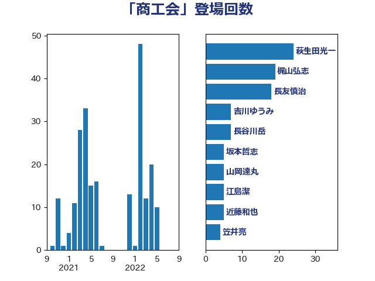

単語「商工会」

| 萩生田光一 | 自由民主党 | 24 回 |
| 梶山弘志 | 自由民主党 | 19 回 |
| 長友慎治 | 国民民主党 | 18 回 |
| 吉川ゆうみ | 自由民主党 | 7 回 |
| 長谷川岳 | 自由民主党 | 7 回 |
| 坂本哲志 | 自由民主党 | 5 回 |
| 山岡達丸 | 立憲民主党 | 5 回 |
| 江島潔 | 自由民主党 | 5 回 |
| 近藤和也 | 立憲民主党 | 5 回 |
| 笠井亮 | 日本共産党 | 4 回 |
| 藤木眞也 | 自由民主党 | 4 回 |
| 宗清皇一 | 自由民主党 | 3 回 |
| 岩渕友 | 日本共産党 | 3 回 |
| 河西宏一 | 公明党 | 3 回 |
| 西村康稔 | 自由民主党 | 3 回 |
| 宮崎政久 | 自由民主党 | 2 回 |
| 宮本周司 | 自由民主党 | 2 回 |
| 小倉將信 | 自由民主党 | 2 回 |
| 小沼巧 | 立憲民主党 | 2 回 |
| 岸田文雄 | 自由民主党 | 2 回 |
| 杉久武 | 公明党 | 2 回 |
| 石井章 | 日本維新の会 | 2 回 |
| 逢坂誠二 | 立憲民主党 | 2 回 |
| 野上浩太郎 | 自由民主党 | 2 回 |
| 長坂康正 | 自由民主党 | 2 回 |
| 高橋光男 | 公明党 | 2 回 |
| 中野洋昌 | 公明党 | 1 回 |
| 五十嵐清 | 自由民主党 | 1 回 |
| 今枝宗一郎 | 自由民主党 | 1 回 |
| 佐藤英道 | 公明党 | 1 回 |
| 古賀友一郎 | 自由民主党 | 1 回 |
| 嘉田由紀子 | 無所属 | 1 回 |
| 国定勇人 | 自由民主党 | 1 回 |
| 大島敦 | 立憲民主党 | 1 回 |
| 宮本岳志 | 日本共産党 | 1 回 |
| 宮本徹 | 日本共産党 | 1 回 |
| 小泉進次郎 | 自由民主党 | 1 回 |
| 平林晃 | 公明党 | 1 回 |
| 松山政司 | 自由民主党 | 1 回 |
| 河野義博 | 公明党 | 1 回 |
| 渡辺猛之 | 自由民主党 | 1 回 |
| 牧原秀樹 | 自由民主党 | 1 回 |
| 玉木雄一郎 | 国民民主党 | 1 回 |
| 田村智子 | 日本共産党 | 1 回 |
| 田村貴昭 | 日本共産党 | 1 回 |
| 白石洋一 | 立憲民主党 | 1 回 |
| 福田昭夫 | 立憲民主党 | 1 回 |
| 笹川博義 | 自由民主党 | 1 回 |
| 美延映夫 | 日本維新の会 | 1 回 |
| 菅義偉 | 自由民主党 | 1 回 |
| 野中厚 | 自由民主党 | 1 回 |
| 金子恭之 | 自由民主党 | 1 回 |
| 鈴木俊一 | 自由民主党 | 1 回 |